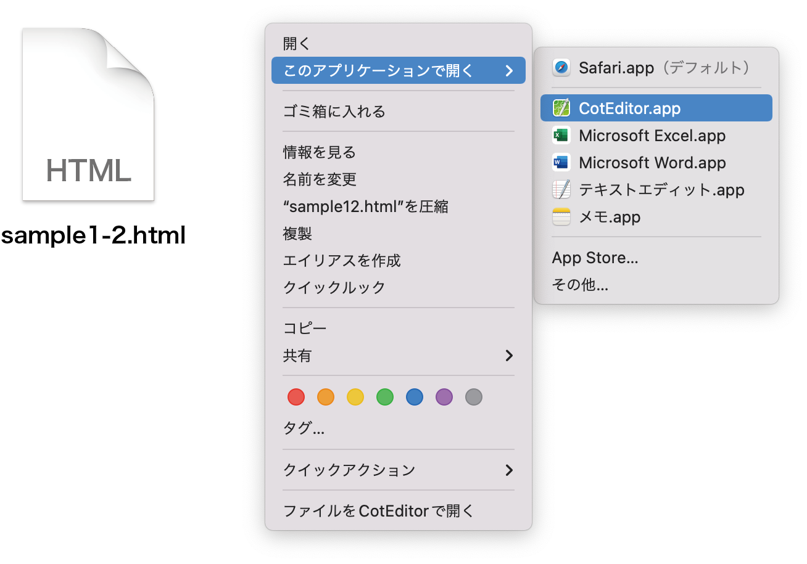
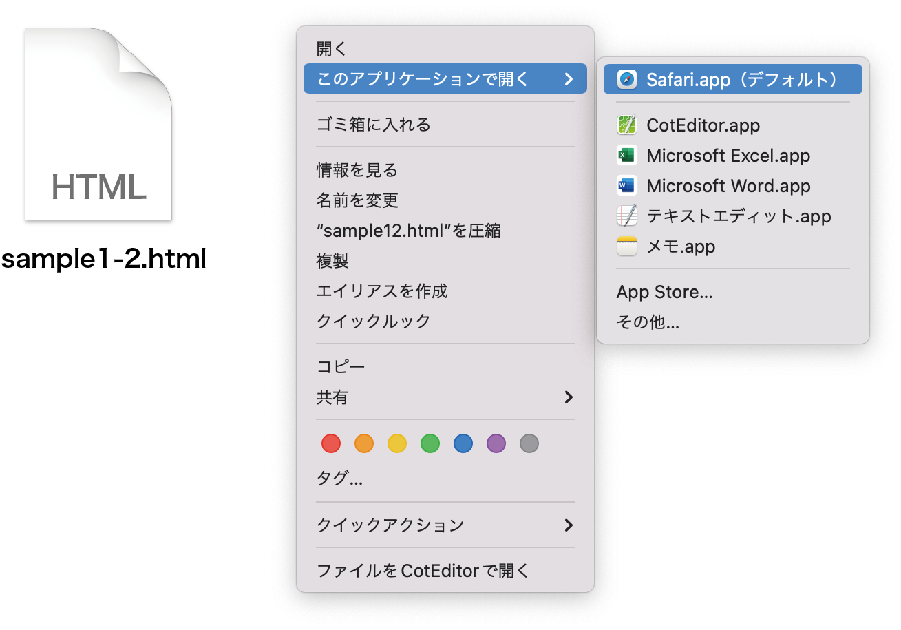
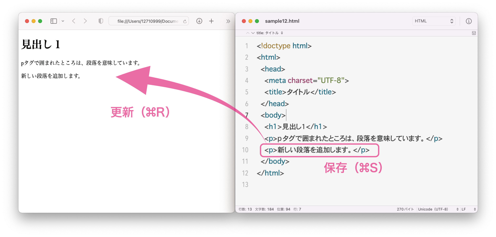

(1) HTMLファイルの基本
HTMLファイルの編集
HTMLファイルをCotEditorで開く
sample1-2.htmlを右クリック（または ２本指クリック）し[このアプリケーションで開く] →
[CotEditor.app]を選択すると、CotEditorでHTMLファイルを開けます。

ソースコードの入力
sample1-2.htmlをCotEditorで開いたら、次のソースコードを書きます。
行頭の字下げ（インデント）は、半角スペース2つ分を入力します。
<!doctype html>
<html>
<head>
<meta charset="UTF-8">
<title>タイトル</title>
</head>
<body>
<h1>見出し1</h1>
<p>pタグで囲まれたところは、段落を意味しています。</p>
</body>
</html>
HTMLファイルの保存
メニューバーの [ファイル] → [保存] をクリックし（コマンド⌘＋S）、保存します。
HTMLファイルの表示
ブラウザで開く
sample1-2.htmlをダブルクリックするか、HTMLファイルを右クリックし[このアプリケーションで開く] →
[Safari.app]を選択すると、Safariが立ち上がりWebページが表示されます。

ブラウザで変更を反映する
CotEditorで編集した内容を反映するには、CotEditorで保存（コマンド⌘＋S）し、Safariでページを再読み込み（コマンド⌘＋R）します。
CotEditorで編集する
CotEditorでsample1-2.htmlを開いて、10行目に次のコードを入力します。
<p>新しい段落を追加します。</p>
変更箇所の反映
次にブラウザで、ページを更新します（一度ブラウザを閉じた場合は、再度開きます）。

(2) HTMLファイルの構成
HTMLファイルの構成
さきほど作成したHTMLファイルの各要素を説明します。
<!doctype html>
<html>
<head>
<meta charset="UTF-8">
<title>タイトル</title>
</head>
<body>
<h1>見出し1</h1>
<p>pタグで囲まれたところは、段落を意味しています。</p>
<p>新しい段落を追加します。</p>
</body>
</html>
<!doctype html>
ドキュメントタイプ宣言といい、このファイルがHTML5のファイルであることを明示します。
HTMLにはいくつかバージョンがあり、この書き方は現在主流になっているHTML5というバージョンの書き方になります。
厳密には、ドキュメントタイプ宣言はタグではありません。
<html>〜</html>
この文書がHTML文書であることを指定します。
<html>〜</html>のあいだに、後述のheadタグとbodyタグを１つずつ指定します。
<head>〜</head>
このあいだにページのタイトルや説明文、使用する外部ファイルのリンクなど、ページの情報を記述します。
この部分はブラウザには表示されません。
<body>〜</body>
実際にブラウザ上で表示されるコンテンツを入力します。
headタグ
<meta charset="UTF-8">
文字コードをUTF-8に指定します。
<title>〜</title>
ページのタイトルを記述します。ブラウザのタブやブックマーク，検索したときの見出しなどとして表示されます。
bodyタグ
bodyタグの中に入れるタグは、次のページから詳しく扱います。
<h1>〜</h1>
見出しを表示します。
<p>〜</p>
段落を表示します。
(3) HTMLファイルの書き方
タグの書き方
開始タグと終了タグに囲まれた範囲のことを要素といいます。
開始タグは<タグ名>のように、<と>でタグ名を囲みます。また、終了タグはタグ名の前に/（スラッシュ）を加えて</タグ名>のように書きます。
※タグ名や<と>は、半角英数字で書きます。基本的に大文字と小文字の区別はありませんが、現在は小文字で記述することが推奨されています。
<タグ名>コンテンツ</タグ名>
タグのネスト
開始タグと終了タグの間に、別のタグが入ることを、タグのネスト（入れ子）といいます。ネストする場合は、必ず内側のタグの終了タグを書いてから、外側の終了タグを入れます。
<p><strong>strongタグ</strong>は強調する場合に使います。</p>
タグのネストとインデント
複数行からなる要素をネストする場合、内側の要素を次のようにインデント（字下げ）すると見やすくなります。インデントする場合は、半角スペース２つ分字下げします。CotEditorの設定＞編集でインデント幅を2スペースにしておけば、Tab
⇥キーで半角スペース２つ分を入力できます。
<ul>
<li>箇条書き１</li>
<li>箇条書き２</li>
<li>箇条書き３</li>
</ul>
タグの属性
タグによっては、開始タグの中にさまざまな設定を書くことがあります。このような設定を属性といい、属性に指定する内容を属性値または単に値といい、"（ダブルクォート）で囲んで記述します。
<タグ名 属性="属性値">コンテンツ</タグ名>
次の例では、リンクを記述するaタグで、そのリンク先をhref属性でリンク先のURLを記述します。
<a href="https://www.kaijo.ed.jp/">海城中学高等学校</タグ名>
ひとつのタグに複数の属性を指定することもあります。次の例では、横幅と縦の長さや代替文字列を指定して画像を表示します。
<img src="./images/photo01.jpg" width="480" height="320" alt="写真01">
コメントアウト
コメントを記すことをコメントアウトといいます。コメントはブラウザ上で表示されない部分で、制作上のメモ書きやHTMLの構造の区切りを入れる目的で使用します。ただし、ソースコードには表示されるので、読まれてはいけないことは記載しないようにしましょう。
HTMLのコード内にコメントアウトするときは <!-- と --> で囲みます。
<!-- ここにコメントを書きます -->
コメントは複数行にわたって記述することもできます。
<!-- 複数行のコメントを
残すこともできます -->